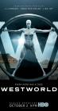

Westworld
Stephen Klancher
...has seen 20
...has seen 0.3 hours
...has not seen 0.1 hours

Timeline
Most Recent:
The Passenger
First Unseen:
Parce Domine (# 21)
...has seen 20
...has seen 0.3 hours
...has not seen 0.1 hours
Timeline
Most Recent:
The Passenger
First Unseen:
Parce Domine (# 21)


Stephen Klancher: May 22, 2018